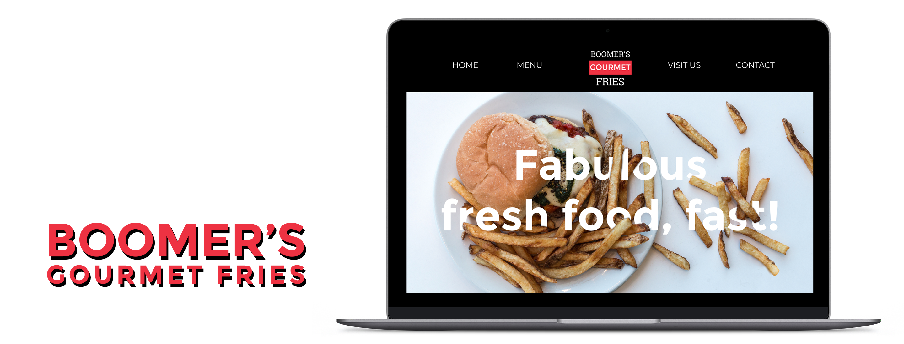
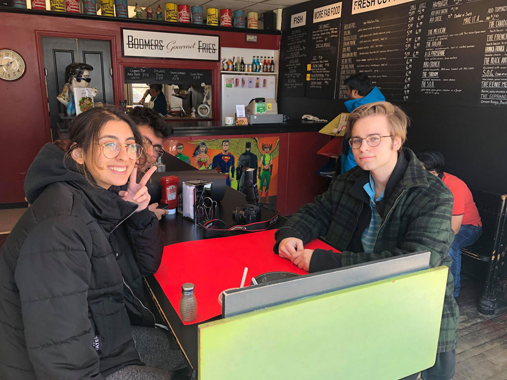
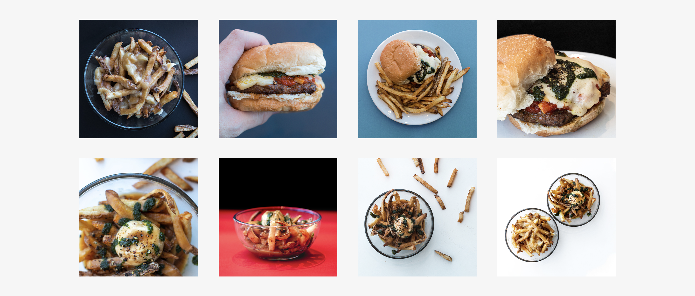

I worked in a team of four to redesign the website of local Stratford fast food chain, Boomer's Gourmet Fries. I had the pleasure of working on this project with Zaid Amer, Julia Nassereddine and Nathan von Wistinghausen. Specifically, I undertook roles doing photography, low/high-fidelity prototyping, HTML, CSS and Javascript.
UX Design, Graphic Design, Photography HTML, CSS, Javascript
February - April 2019
Balsamiq, Figma, Photoshop, Illustrator, Brackets.

Boomer's has acclaimed food and a good reputation. However, the Achilles heel to their business may be the outdated appearance of their website. As a team, we identified that while the design choices made by Boomer's were well intentioned, many of them fell short and failed to communicate the content of the website effectively. We were able to lump these shortcomings into two main categories; outdated design and usability.By targeting these pain points we were able to modernize the look and improve the usability of the Boomer's Gourmet Fries website, and better display their food.
The redesigned website is a simple one page, continuous scroll website. We chose to do it in one page as the original Boomer's site had little content that needed to be moved over, as well as because a one page layout for a restaurant makes it very easy and effective for anyone to quickly scroll through and navigate.
Given the identified problems and our new site map, we made some changes to the website. Some changes we have made include a collapsable menu, as well as a landing page that features a photo of their food in a more appealing compared to Boomer's old slideshow header.

Many of the photos displayed on the original Boomer's website were very saturated and didn’t do their food justice. On a quick photoshoot excursion, our team travelled to the restaurant where I photographed some quick photos of a few menu items, with the help and input from Zaid, Julia and Nathan.

Using Figma, and then some HTML, CSS and Javascript, we created a high fidelity version of our re-conceptualized Boomer’s website.